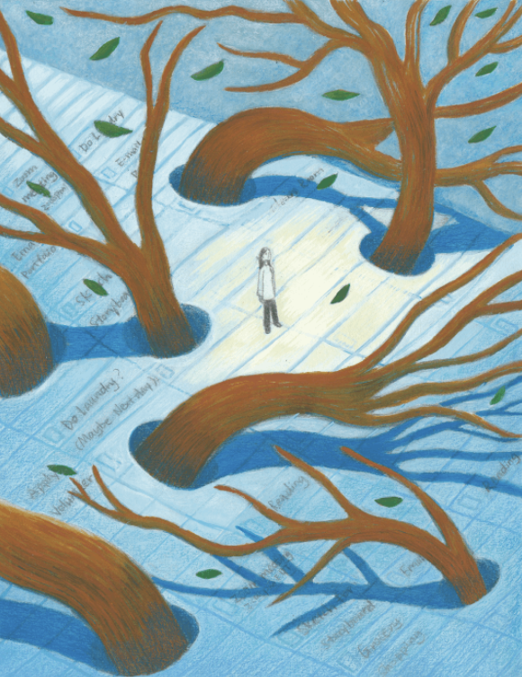
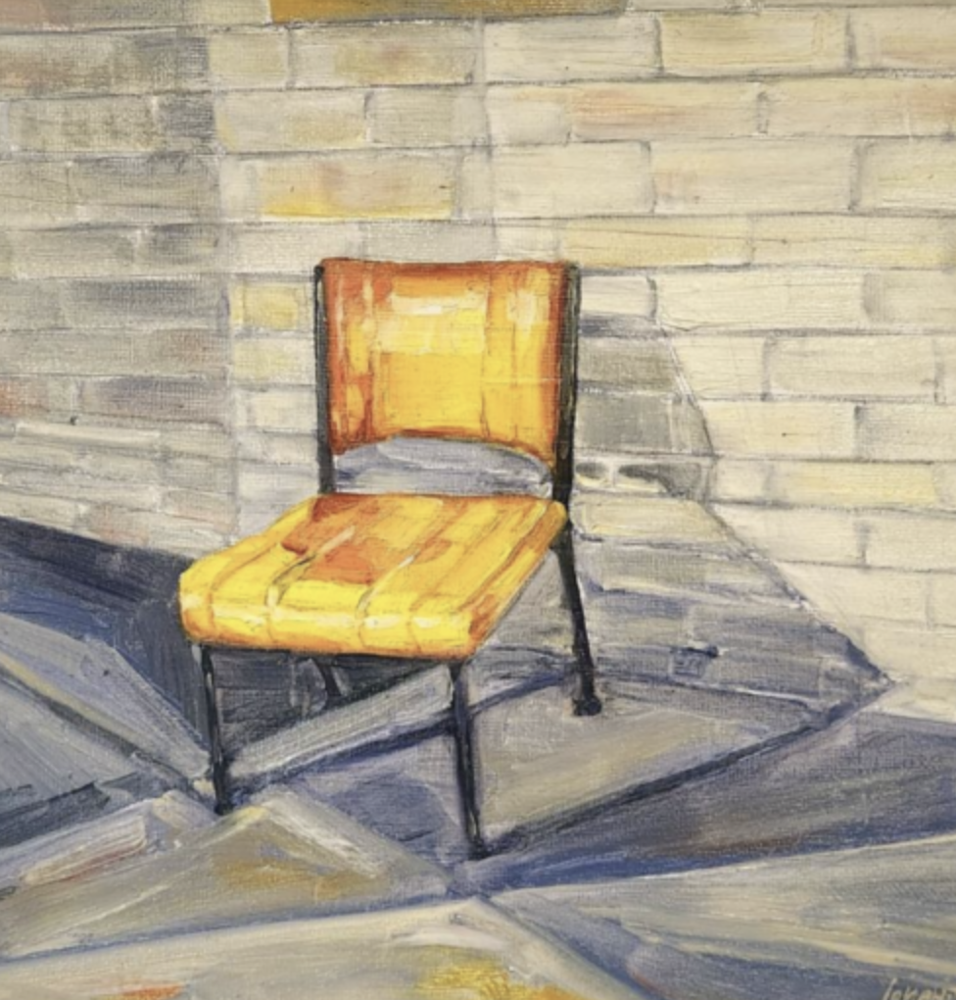

Pamela Smith is a Dublin-based writer who transforms the ordinary into highly compressed fiction. Her work explores the quiet complexities of inner worlds, disorders, and transformation.
When she isn't writing, she can be found lingering in local cafes, sipping a cappuccino, enjoying a cinnamon roll, and getting lost in her thoughts.
Characterised by a penetrating density and intense observational power, Pamela’s prose cuts beneath the surface of the ordinary to unleash an acute, highly concentrated psychological friction.
Her approach fully submerges into the raw turbulence of the mind, fusing the complexity of internal disorders with a visceral, multi-layered narrative voice that refuses to hold back.

A midnight scrubbing routine under suffocating bleach fumes is broken when a sharp tap at the window invites a silent intruder into a fracturing inner world.
Read at Tint Journal
A tragic memory of a sister choking triggers a compulsive, hyper-controlled eating ritual where survival is measured in counts of six.
Read at The Blood PuddingAn immersive exploration of psychological interference and internal static, tracking the thin, turbulent line between internal disorder and the struggle for clarity.
Read Work